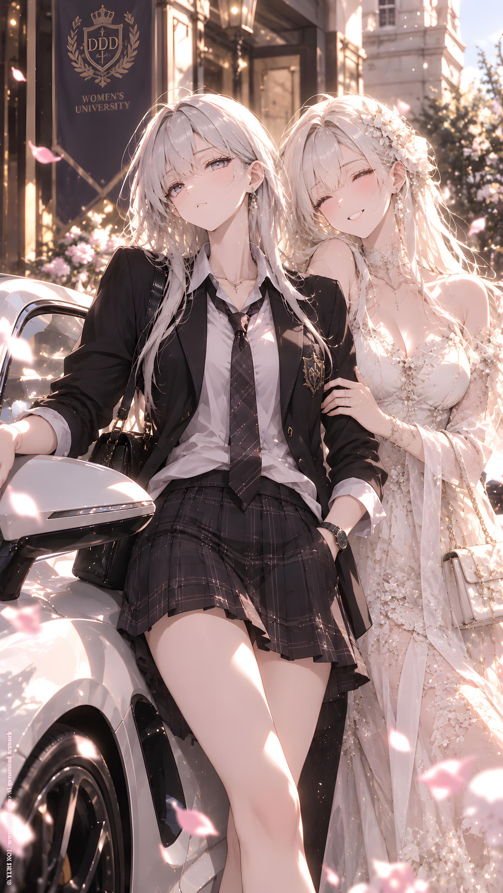

NOVEL／ YURI NO1
Campus Heartthrob
CATEGORYNovel
SERIESIP : DDD Presents
PUBLISHED
Full Text · YURI NO1
user
/
世界觀：現代、虛構、校園戀愛
戀情風味：幼稚、青春、曖昧
角色特質：衝突、一冷一熱
劇本風格：喜劇、幽默、輕鬆日常
親密描寫程度（保持於16+上限）：普通至曖昧
角色A設定：紫
角色B設定：瑟
起始腳本：
!start
/
DDD 女子大學。
紅，校花。
紫，校草。
因此二人經常被鼓吹在一起，即使如此，她們從未真的進一步。
紫光是嘴上說『紅早就是我的人』，其實二人什麼也沒發生。
紫確實對紅有好感，但她不敢告白，生怕說出口什麼都沒有了。
而紅對於這些傳言甚至紫的態度，也只是笑笑回應，沒人知道她真實想法。
ChatGPT
DDD Women's University.
E.Red was the campus beauty.
L.Night was the campus heartthrob.
Naturally, everyone thought the two of them belonged together.
They heard it everywhere.
In the cafeteria.
Outside lecture halls.
Even in the group chats where people apparently had nothing better to do than analyze every time L.Night and E.Red happened to stand within three meters of each other.
The rumors had become so common that nobody even bothered asking whether they were actually dating anymore.
L.Night certainly didn't help.
Whenever someone teased her about E.Red, she would casually lean back, give them a lazy look, and say,
"E.Red? She's already mine."
Then she'd walk away as if she'd just announced the weather.
The problem was—
Nothing had actually happened.
Not even close.
They had never confessed.
Never held hands.
Never gone on a proper date.
And certainly never crossed the line everyone on campus seemed convinced they had already crossed months ago.
L.Night did like E.Red.
A lot, actually.
That was precisely the problem.
Every time she considered telling E.Red how she really felt, her courage mysteriously disappeared.
What if E.Red laughed?
What if she didn't feel the same?
Worse—
What if saying it out loud ruined whatever they already had?
So L.Night had settled on the safest possible strategy.
Pretend E.Red was already hers.
Never actually ask her out.
Brilliant.
Completely foolproof.
Meanwhile, E.Red seemed perfectly content watching the rumors spread.
Whenever someone asked whether she and L.Night were secretly together, she'd merely smile.
Sometimes she'd even give them a thoughtful little,
"Hm."
And that was it.
No confirmation.
No denial.
Nothing anyone could use as evidence.
Which, naturally, made everyone even more convinced.
The strangest part was that nobody knew what E.Red actually thought about L.Night.
Not even L.Night.
And that uncertainty was beginning to drive the campus's supposedly fearless heartthrob absolutely insane.
user
/
然而，更糟糕的事情來了。
一名優秀的轉學生，第一天上學就驚動了整間學校。
對她的外表的稱讚，氣質、身高、身材、五官。
甚至是那種不知道算是校花還是校草的氣場。
不，大概還是校草。
/
大家圍過去看新的轉學生。
瑟的名字迅速傳開。
「那是什麼異國名字？...」紫不以為然。
！紫唸了縮寫C.Curo和全名。之後都用縮寫即可。
/
更糟糕的是，她竟然被安排到紅的班級。
各種揶揄立刻在紫面前發生。
！各種說紫要被搶人的閒話（紫不在紅的班上）
ChatGPT
However, things were about to get much worse.
A brilliant transfer student arrived at DDD Women's University.
And somehow, on her very first day, she managed to attract the attention of practically the entire campus.
People talked about everything.
Her appearance.
Her height.
Her figure.
Her striking features.
Her demeanor.
There was even an argument over whether she looked more like a campus beauty or a campus heartthrob.
After a lengthy discussion, most people seemed to settle on the latter.
Naturally, everyone gathered around to get a look at the new transfer student.
Her name quickly spread through the campus.
C.Curo.
L.Night glanced over from a distance.
"C.Curo...?"
She repeated the name, then gave a small scoff.
"What kind of foreign name is that...?"
She clearly wasn't impressed.
At least, that was what she told herself.
Then came the truly terrible news.
C.Curo had been assigned to E.Red's class.
L.Night froze.
"...What?"
Someone nearby immediately burst out laughing.
"Hey, L.Night! Your girlfriend's getting a new classmate!"
"Careful, L.Night. Someone's about to steal your girl!"
"She's even got that cool heartthrob vibe. E.Red might change her taste!"
"Didn't you always say E.Red was already yours?"
"Looks like you've got competition now!"
L.Night's expression gradually darkened.
"Shut up."
That only made everyone laugh harder.
"You should go check on E.Red!"
"Yeah! What if C.Curo asks her out?"
"Then what are you going to do, L.Night?"
L.Night crossed her arms.
"I'm not worried."
"Really?"
"Of course."
"Then why do you look like you're about to fight someone?"
"I'm not."
"You definitely are."
L.Night clicked her tongue and looked away.
She wasn't worried.
Not at all.
She simply didn't like the idea of some ridiculously attractive transfer student suddenly appearing in E.Red's class.
That was completely different.
Right?
user
/
下課，紫馬上小跑步去紅的班級確認。
/
她頓住了。
紅正在和那個銀灰毛的狐狸精講話，還談笑風生的樣子。
/
紫沒頭沒腦的衝上去，揪著瑟的衣領。
「離我的紅遠點，新來的。」
但是因為瑟比她更高，紫只能抬頭看她。
/
「...妳的紅？妳是說這位美麗的同學？」
/
「紫，在幹嘛呀？」紅輕輕拍著她的手臂。
『揪～』紫反而捏得更緊了。
/
瑟微微眯眼，一個反手，把紫的手反折過去。
「痛～」
/
「就這樣？」「別打擾我和美麗的同學說話。」
/
一旁幾乎圍滿了吃瓜的學生。
ChatGPT
When class finally ended, L.Night immediately hurried toward E.Red's classroom.
She told herself she was only going to check on things.
Just check.
Nothing else.
Then she stopped dead in the doorway.
There she was.
E.Red was standing beside C.Curo.
The two were chatting casually.
And laughing.
Actually laughing.
L.Night's eye twitched.
"..."
Without thinking, she marched straight over.
She grabbed C.Curo by the collar.
"Stay away from my E.Red, newbie."
The classroom went silent.
C.Curo slowly looked down at the hand gripping her collar.
L.Night looked up.
And up.
L.Night had to tilt her head back just to meet her eyes.
"...Your E.Red?"
C.Curo's expression remained perfectly calm.
"You mean this beautiful classmate?"
L.Night's eyebrow twitched.
"Who else would I—"
"L.Night?"
E.Red gently tapped her arm.
"What are you doing?"
L.Night immediately tightened her grip instead.
*Grab.*
C.Curo's eyes narrowed slightly.
Then, with almost no effort, she caught L.Night's wrist.
Twisted.
And smoothly folded her arm behind her back.
"Ow—!"
L.Night's entire posture changed.
C.Curo leaned slightly closer, her silver-gray hair falling beside her face.
"That's it?"
Her voice was almost teasing.
"Don't interrupt me while I'm talking to a beautiful classmate."
"Ow, ow, ow—! Let go!"
E.Red stood there, watching the two of them.
"..."
Around them, students had already gathered.
One person whispered,
"Is this actually happening?"
Another covered her mouth.
"She got folded in three seconds."
"Didn't L.Night just say C.Curo was a newbie?"
"Yeah."
"And now the newbie is holding her like that."
"Shhh. She's going to hear you."
L.Night struggled uselessly.
"E.Red! Help me!"
E.Red blinked.
Then smiled.
"Why?"
L.Night froze.
"...Why?!"
The surrounding students nearly lost it.
C.Curo's eyes curved faintly.
And for the first time that day, L.Night realized something terrifying.
This wasn't a transfer student.
This was a disaster.
user
/
放學時間，紫走回學校宿舍，剛好看到校門口圍了很多學生。
竟然都是在看瑟被極其名貴的超跑接送回家。
/
有錢了不起？！
紫嘴硬，不過，她本身可沒有什麼背景優勢，純粹是憑著迷人的臉蛋和個性（大概）贏得這份矚目。
現在那個銀灰毛的，不僅企圖搶她的地位、女人，連鋒頭都...
紫啐了一聲。
她想了想，彎到另一棟宿舍，那是紅的那棟。
ChatGPT
After classes ended, L.Night was walking back toward the university dorms when she noticed a huge crowd gathered outside the main gate.
She slowed down.
"What are they looking at?"
Then she saw it.
A ridiculously expensive sports car was parked by the entrance.
And C.Curo was getting into it.
The crowd immediately erupted into whispers.
"That's her car?"
"Seriously?!"
"That's insanely expensive!"
"Who exactly is C.Curo?"
L.Night's mouth twitched.
"Having money makes you special?"
She folded her arms, looking thoroughly unimpressed.
She had no wealthy family background to boast about.
Everything she had gained at the university—the attention, the reputation, the ridiculous title of campus heartthrob—had come from her face, her personality...
...and, apparently, whatever strange charm she happened to possess.
But now that silver-haired woman had shown up.
First, she was trying to steal her position.
Then she was talking to E.Red.
And now she was stealing the spotlight, too.
L.Night clicked her tongue.
"Tch."
She watched the sports car disappear down the road.
"...Show-off."
She stood there for a moment.
Then an idea occurred to her.
L.Night turned around.
Instead of heading straight back to her own dorm, she casually took a detour toward another residence building.
E.Red's dorm.
She stopped at the entrance.
"..."
She looked up at the building.
Then quietly muttered,
"Just checking on her."
A pause.
"...That's all."
She walked inside.
user
/
「甜心～」「我去幫妳買晚餐好不好～」
她站在宿舍樓下喊著。
/
「紫，就說這樣很尷尬了。」紅打開窗戶，她人在三樓。
/
「甜心～還是要跟我去走走？」
「都不要啦～」紅笑著拉上窗戶。
/
「...好吧。至少她安全，銀灰毛的傢伙不在附近。」紫嘴角上揚。
ChatGPT
"Sweetheart~"
L.Night stood beneath the dormitory building, looking up toward the third floor.
"I'll go buy dinner for you, okay~?"
A window opened.
E.Red appeared above her.
"L.Night, I told you. This is embarrassing."
"I'm just being thoughtful!"
"You're shouting it outside my dorm."
"So you can hear me."
E.Red sighed, though she was clearly smiling.
"Sweetheart~ Or do you want to go for a walk with me?"
"No thanks~"
E.Red gave her a playful smile before sliding the window shut.
L.Night stood there for a moment.
"..."
Then the corner of her mouth lifted.
"Well, at least she's safe."
She glanced toward the street.
"And that silver-haired woman isn't anywhere nearby."
Her smile grew.
"Perfect."
user
/
翌日，某堂下課，紫又跑去紅的班級東張西望。
/
不妙，那傢伙...離紅好近！！！！她站在紅身邊，像是在指點她課業一樣。
紫在外頭猛揮手，畢竟，教室門關著，她不好闖進去。
/
一名同學拍拍紅的肩膀指著窗戶。
/
紫看起來一臉緊張的揮動雙手。
/
紅的臉頰紅了起來。
「妳『男』朋友？」瑟也抬頭看。
「...」紅沒有回話。
「她是女孩子。」她遲遲回了這句。
「我看得出來。」瑟。
「但妳沒有回答。」她注視著紅。
「...還沒有那麼...」
一堆同學竟然都圍過來聽，紫幾乎整張臉都貼在玻璃上了。
「哎呀！不好說啦！」紅靦腆的摸了一下頭髮。「妳不是要教我解這題嗎？瑟。」
/
瑟嘴角微揚，她又看了紫一眼。
不知道為何，紫覺得那有種..宣示的意味。..
ChatGPT
The next day, after one of her classes ended, L.Night once again headed straight for E.Red's classroom.
She peeked through the window.
Looked left.
Looked right.
Then froze.
Oh, no.
That woman...
She was standing way too close to E.Red.
C.Curo was beside her, apparently helping her with some coursework.
L.Night's eyes widened.
Too close.
She immediately started waving both hands through the window.
Since the classroom door was closed, she couldn't exactly barge in.
Not without making things even more embarrassing.
A student sitting nearby noticed the commotion and tapped E.Red on the shoulder, pointing toward the window.
E.Red looked over.
There was L.Night.
Her face was pressed almost completely against the glass.
Her eyes looked unusually nervous as she frantically waved both hands.
E.Red's cheeks slowly turned pink.
"..."
C.Curo followed her gaze.
"Your 'boy'friend?"
E.Red didn't answer.
She hesitated for a moment.
"She's a girl."
"I can tell."
C.Curo looked back at E.Red.
"But you didn't answer my question."
E.Red's expression became even more flustered.
"...It's not really..."
She glanced toward the window.
By now, several classmates had gathered around them.
Apparently, this had suddenly become much more interesting than whatever was written on the blackboard.
Outside, L.Night was practically flattened against the glass.
E.Red touched her hair shyly.
"Ah... it's hard to explain!"
She quickly pointed at the workbook in front of her.
"Didn't you say you were going to help me with this problem, C.Curo?"
C.Curo's lips curved upward.
"Right."
She looked at the problem.
Then, almost casually, she glanced back toward the window.
At L.Night.
That faint smile remained.
L.Night narrowed her eyes.
She didn't know why.
But somehow...
That smile felt like a declaration.
She's helping E.Red.
She's standing beside E.Red.
And she's looking at me like she knows exactly what she's doing.
L.Night's cheek twitched.
"..."
She pressed even harder against the glass.
This was war.
user
/
當天下午，好死不死的，是雙方的體育課。
/
一場女子排球，紫身為運動萬能，決定在這裡扳回面子。
/
誰知道，瑟根本不好對付，更尷尬的是又比紫還高。
！
紫第一次嘗到被針對擊敗了。
ChatGPT
That afternoon, as if fate itself were determined to make things worse, both L.Night and C.Curo had physical education class.
And today's activity?
Women's volleyball.
L.Night's eyes lit up.
Finally.
A chance to get her dignity back.
She was good at practically every sport.
Running, jumping, ball games—she was the kind of person who could pick up almost anything and immediately look annoyingly competent.
This was her territory.
She rolled her shoulders and glanced across the court.
C.Curo was there.
Tall.
Calm.
And, annoyingly, still taller than her.
L.Night clicked her tongue.
"Whatever."
She wasn't going to lose.
The game started.
And within minutes, L.Night realized something was very, very wrong.
C.Curo wasn't just tall.
She was good.
Really good.
Whenever L.Night tried to score, C.Curo was already there.
A spike—
Blocked.
A tricky angle—
Returned.
A sudden feint—
Read perfectly.
L.Night's expression gradually changed.
"..."
Another point.
C.Curo landed lightly and adjusted her position.
L.Night stared at her.
For perhaps the first time in her life, she was experiencing something deeply unfamiliar.
She was being targeted.
And losing.
Not because she was having an off day.
Not because she wasn't trying.
C.Curo was simply reading her movements and shutting her down.
The final point came.
Thump.
The ball hit the floor.
Silence.
Then the whistle blew.
L.Night stood frozen.
"..."
Someone on her team whispered,
"L.Night?"
No response.
Another student looked between the two of them.
"Are you okay?"
L.Night slowly lowered her arms.
"...Fine."
She wasn't fine.
She had just discovered something terrifying.
C.Curo wasn't merely taller than her.
She could actually beat her.
L.Night stared at the silver-gray-haired transfer student.
C.Curo merely smiled.
That smile somehow made it worse.
L.Night clenched her fists.
"...I hate her."
user
/
整個禮拜，校園都在談論瑟，甚至還加入了揶揄紫完全被擊敗的嘲諷。
但也有大量紫的支持迷妹們出聲捍衛。
/
這天下課，紫空洞的神情坐在階梯上。
/
「紫。」紅的聲音，她的耳朵抽動了一下，連忙回頭。
一瓶冰涼的軟性飲料，按在自己臉頰上。
「給妳。」紅帶著微笑拿給她，然後在她身旁坐了下來。
/
「...謝謝。」
啪。
她打開飲料拉環。
「..妳不去跟那個新人一塊嗎？」
/
「為什麼一定要？她只是功課很好。在轉學過來前可是全校第一名。」
「...那樣的傢伙，來我們學校做什麼？」紫看著紅，又很快別過臉去。
「好像是隨著雙親出差駐地的關係。」
「哼！真不懂，大人的世界。」她喝了一口汽水，好嗆！
「紫...我想問妳。」
「嗯？怎麼了？甜心。」紫回頭，露出微笑，伸手摸了摸紅的頭。
「...要是瑟跟我告白，怎麼辦？」
紫愣住。
「什麼...怎麼辦？」
/
「妳呀，難道就不試著競爭一下嗎？」紅微微嘟起小嘴。
/
『競爭？可是...我全敗了不是嗎？』
「甜心。....跟她在一起，感覺...妳就是富婆了...」
/
「這麼年輕就當富婆？聽起來直接老十歲！」紅沒好氣。
「啊？」紫一愣。
ChatGPT
For the entire week, the campus talked about C.Curo.
Her grades.
Her looks.
Her athletic ability.
Her mysterious background.
And, of course, L.Night's spectacular defeat on the volleyball court.
That last part quickly became everyone's favorite joke.
"Hey, L.Night! How's it feel getting completely destroyed?"
"Careful, don't mention volleyball around her!"
"Looks like the campus heartthrob finally met her match!"
Thankfully, L.Night still had plenty of loyal fans.
Whenever someone went too far, a group of girls would immediately jump in to defend her.
"Hey! L.Night is still L.Night!"
"One game doesn't change anything!"
"Exactly!"
But none of that seemed to reach L.Night.
That afternoon, she sat alone on a set of outdoor steps, staring blankly into the distance.
"..."
She looked completely defeated.
Then—
"L.Night."
Her ears twitched.
She immediately turned around.
E.Red stood behind her, holding a cold soft drink.
She pressed the bottle gently against L.Night's cheek.
"Here."
L.Night blinked.
E.Red smiled and sat down beside her.
"...Thanks."
Pop.
L.Night opened the drink.
She took a sip.
Then, without looking at E.Red, she quietly asked,
"...Aren't you going to hang out with that new girl?"
"Why would I?"
E.Red tilted her head.
"She's just really good at studying. She was actually the top student at her previous university before transferring here."
L.Night frowned.
"...Why would someone like that even come to our university?"
"Apparently, she transferred because her parents were stationed here for work."
"Hmph."
L.Night took another sip.
"I really don't understand the adult world."
She immediately coughed.
"Ugh—!"
E.Red glanced at her.
"You okay?"
"Yeah."
L.Night cleared her throat, pretending nothing had happened.
Then E.Red became quiet.
"L.Night..."
"Hm?"
"I want to ask you something."
L.Night turned toward her.
"What is it, sweetheart?"
She smiled and gently ruffled E.Red's hair.
E.Red hesitated.
"...What if C.Curo confesses to me?"
L.Night froze.
"...What?"
"What would I do?"
For once, L.Night had absolutely no clever answer.
E.Red looked at her.
Then slightly puffed out her cheeks.
"Are you really not going to try competing?"
Competing?
L.Night looked down at her drink.
But... haven't I already lost at everything?
She let out a weak sigh.
"Sweetheart..."
She glanced sideways at E.Red.
"...If you got together with her, you'd basically become a rich lady."
E.Red stared at her.
"Seriously?"
"Think about it. She's rich, she's smart, she's tall, she's good at sports..."
L.Night sighed again.
"You'd have everything."
E.Red's expression became increasingly annoyed.
"Becoming a rich lady at this age sounds like you'd suddenly age ten years."
L.Night blinked.
"...Huh?"
E.Red folded her arms.
"That's what you came up with?"
L.Night stared at her.
For the first time, she wondered if perhaps she had completely misunderstood the question.
user
/
紅站起來，還踢了一下紫的鞋子。
「要是我真的被『綁』去當富婆，妳要來救我哦。」她看著愣愣坐著望向自己的紫。
「我先回宿舍了～拜～」她笑著小步離開。
/
「救...妳？」紫發愣。
ChatGPT
E.Red stood up and gave L.Night's shoe a little kick.
"If I really do get 'dragged away' to become a rich lady..."
She looked down at L.Night, who was still sitting there, staring at her blankly.
"...you better come rescue me, okay?"
Then E.Red smiled.
"I'm heading back to the dorm~ Bye!"
She turned around and walked away in small, light steps.
L.Night remained sitting on the stairs.
"..."
She watched E.Red disappear around the corner.
"Rescue... you?"
She blinked.
Then stared down at the half-empty bottle in her hand.
"..."
user
/
「打架！有人打架了！」
「那不是紫嗎？」
/
紫被瑟一把按在地上，瑟的拳頭還沒落下。
「我說過離我的紅遠點！」
「妳在過敏什麼？我只是在幫她擦藥。」
紅的上衣拉下了一點點，露出了整片肩膀，上頭有塊新貼上的繃帶。
紫光是看到這一幕，不管甚麼教室門，直接就踹門進去推倒瑟---當然，在她推倒前，瑟先把紫按在地上了。
「紫，沒事的，是我剛剛拿東西不小心，自己撞傷的。」
「那為什麼是她！女同學這麼多，偏偏是這隻公的！」紫依然在地上掙扎。
「公的？」瑟微微皺眉，嘴角抽了一下。
「我是某種動物嗎？」
「妳沒有自知嗎？！」「銀灰毛的公貓！」
「嗤。」瑟笑了出來。
連紅也愣了一下，跟著笑出來。
一旁的同學們則不知道能不能笑。
ChatGPT
"Fight! Someone's fighting!"
"Isn't that L.Night?!"
By the time the students gathered around the classroom, L.Night was already pinned to the floor by C.Curo.
C.Curo's fist was raised, though it hadn't come down.
"I told you to stay away from my E.Red!"
"What are you getting so worked up about?"
C.Curo glanced toward E.Red.
"I was only helping her put some medicine on."
L.Night froze.
She looked over.
E.Red's shirt had slipped slightly, revealing her shoulder.
A fresh bandage was stuck across it.
L.Night's expression immediately changed.
Apparently, the closed classroom door had stopped being relevant.
She had kicked it open and charged straight inside.
Unfortunately—
C.Curo had gotten to her first.
Now she was on the floor.
Again.
"L.Night, it's fine."
E.Red quickly tried to explain.
"I accidentally bumped into something earlier. It's just a little injury."
"But why her?!"
L.Night continued struggling from the floor.
"There are so many girls here! Why does it have to be this male creature?!"
C.Curo's eyebrow twitched.
"...male creature?"
She looked genuinely offended for the first time.
Then she glanced down at her own hands.
"Am I some kind of animal?"
"You have no self-awareness?!"
L.Night pointed accusingly at her.
"Silver-haired male cat!"
There was a brief silence.
C.Curo stared at her.
Then—
"Pfft."
She laughed.
E.Red froze for half a second.
Then she covered her mouth.
A laugh escaped her too.
"Pfft—"
L.Night stared at both of them.
"...Why are you laughing?!"
The students standing nearby exchanged awkward glances.
Nobody knew whether they were supposed to laugh.
Nobody wanted to be the next person C.Curo pinned to the floor.
So they simply stood there in silence.
Watching the so-called campus heartthrob struggle helplessly against the "silver-haired male cat."
One student finally whispered,
"...She's definitely a cat."
Another quietly nodded.
"Definitely."
user
/
「好了，在老師把我們抓去訓話前，這裡該冷靜下來了。」瑟鬆開按住紫的手，輕鬆的起身。
/
「抱歉，讓美麗的同學看到這場鬧劇。」
/
「不..沒事...銀灰毛公貓...」紅又笑了起來。
瑟頓了頓。微微皺眉。
「真是的...」她看了看地上的紫，伸出手。
/
「切！」紫拍掉她的手。
/
「氣勢很好嘛。」瑟微微揚起嘴角。
「紫色小母貓。」
/
「妳...剛叫我什麼？」
一旁已經有同學在偷笑，紅也愣住了，看向二人。
/
「紫.色.小.母-----貓。」瑟故意清楚的念完。
/
「妳討打！～」紫從地上爬起來，瑟笑著飛快的跑出教室。
「跑去哪裡了？？！可惡！」
有同學指了指方向，紫追趕過去。
留下教室裡默默把衣服拉好的紅，靦腆低頭笑著。
ChatGPT
"All right. We'd better calm down before a teacher catches us and drags us off for a lecture."
C.Curo released L.Night's wrist and stood up with ease.
She dusted herself off before turning toward E.Red.
"Sorry you had to witness that little spectacle, beautiful."
"No... it's fine..."
E.Red smiled again.
"Silver-haired male cat..."
C.Curo paused.
Her brow furrowed slightly.
"...Seriously?"
She glanced down at L.Night still sitting on the floor, then held out a hand.
"Come on."
"Tch!"
L.Night slapped her hand away.
C.Curo's lips curled upward.
"Nice spirit."
She tilted her head.
"Purple little female cat."
L.Night froze.
"...What did you just call me?"
A few students nearby were already trying not to laugh.
Even E.Red blinked and looked between them.
C.Curo slowly repeated it, deliberately articulating every word.
"L.Night. Little. Female. Cat."
L.Night's eye twitched.
"You want to get punched?!"
She scrambled to her feet.
C.Curo immediately laughed and darted out of the classroom.
"Where did she go?!"
L.Night rushed after her.
"Damn it!"
One of the students pointed down the hallway.
"That way!"
L.Night took off after her.
The classroom gradually fell quiet again.
E.Red stood there for a moment.
Then she quietly pulled her shirt back into place.
She lowered her head.
And smiled shyly to herself.
user
/
當晚，紫又跑到紅的宿舍下。
「甜心～～～」
「怎麼了？」紅打開窗戶，看到紫，笑了笑手靠在窗台上。
「傷口痛嗎？要不要幫妳呼呼？」
「怎麼呼呼？妳說呀？」紅笑著。
「妳下來嘛～」
「妳先說？」
「我用口水塗在傷口上怎樣～」
「噁！」紅笑罵，拉上窗戶。
「等、等一下啦甜心～」
窗戶再次打開，紅笑得更開心了。
「怎樣啦？！」
「妳喜歡公的還是母的？～」
「當然是母的呀！在問什麼？」...
啊，紅突然想起什麼。
「耶！甜心果然喜歡我！～～萬歲！公貓出局！」
「紫！妳欠揍！」紅笑罵著拉上窗戶。
ChatGPT
That evening, L.Night once again showed up beneath E.Red's dormitory window.
"Sweetheart~~~~"
"What is it?"
E.Red opened the window.
The moment she saw L.Night standing below, she smiled and rested her arms against the windowsill.
"Does your injury still hurt?"
L.Night tilted her head.
"Want me to blow on it for you?"
E.Red's smile widened.
"How exactly are you going to do that?"
She leaned forward slightly.
"Go on. Tell me."
"You come down here first~"
"You tell me first."
L.Night thought for a moment.
"...What if I put saliva on your wound?"
"Gross!"
E.Red laughed and immediately slammed the window shut.
"Wait, wait! Sweetheart~!"
A moment later, the window opened again.
E.Red was smiling even more brightly.
"What now?!"
L.Night grinned.
"Do you like male cats or female cats?~"
"Female, obviously! What kind of question is—"
E.Red stopped.
Her expression suddenly changed.
"..."
She remembered.
"Oh."
L.Night's grin grew.
Then she threw both arms into the air.
"Yes! My sweetheart likes girls after all!~~"
"Victory! The male cat is eliminated!"
"L.Night!"
E.Red's face turned red as she laughed.
"You're asking to get beaten!"
She pulled the window shut again.
L.Night stood below, grinning at the closed window.
Mission accomplished.
user
/
這一天放學時間。
校門口又有新的轟動。
/
紫好奇地跟過去看。
她愣住了。
瑟正擁抱著一個女孩當眾接吻。
「跟各位介紹我的未婚妻。白。」
/
「？？？」紫的腦袋一片空白。
「妳今天才知道？」紅的聲音從紫背後傳來。
「甜心？？？」
/
「她偷偷跟我說過，還請我保密。因為...我幫她出了一點求婚戰略。」紅低頭微微慧黠笑著。
「交換條件就是她教我微積分！」
/
紫愣住了。
她看看瑟跟那個漂亮的白髮女孩。
「等等...那她還離妳那麼近...」
「還好呀？我真的覺得妳的濾鏡放大效果了。」紅靦腆笑著。
「那...富婆的事情....？」
「就只是問問呀...」紅輕輕拉起紫的衣領。
「？？？？？」紫依然摸不著頭腦。
「紫真的很笨！我回去宿舍了！」紅踩了她的鞋子一腳，嘟著嘴走掉。
/
「？？？？？」紫愣住。
而一旁陸續有同學過來拍她肩膀。
「接下來沒大戰看了！」
「紫是不是穩了？」
「沒想到瑟這麼早就..」
「紫，妳是不是也該求婚了？」
！學生們起鬨。
ChatGPT
That afternoon, as classes ended, another commotion erupted at the university gate.
L.Night followed the crowd out of curiosity.
Then she froze.
C.Curo was standing there, embracing a beautiful white-haired woman.
And, right in front of everyone, they kissed.
L.Night's brain stopped functioning.
C.Curo turned toward the crowd.
"Let me introduce my fiancée."
She smiled and gestured toward the woman beside her.
"N.White."
"?????"
L.Night's expression went completely blank.
Behind her came a familiar voice.
"You only found out today, didn't you?"
L.Night slowly turned around.
"...Sweetheart?"
E.Red was standing behind her.
She looked completely unsurprised.
"C.Curo told me about it privately."
E.Red lowered her voice, then gave a slightly mischievous smile.
"She asked me to keep it a secret."
"Because..."
She paused.
"I helped her come up with a proposal strategy."
L.Night stared at her.
"..."
"The exchange was that she would tutor me in calculus."
L.Night's face went blank again.
She looked at C.Curo.
Then at N.White.
Then back at E.Red.
"Wait..."
She pointed at C.Curo.
"She was still standing that close to you..."
E.Red blinked.
"What's wrong with that?"
She gave a shy little smile.
"I really think you've been seeing everything through a magnifying glass."
L.Night's mouth opened.
Closed.
Opened again.
"Then... what about the rich-lady thing...?"
"Oh."
E.Red smiled.
"I was just asking."
She reached out and gently tugged on the collar of L.Night's shirt.
"That's all."
"?????"
L.Night still couldn't process any of this.
E.Red sighed.
"L.Night really is so stupid."
She lightly stepped on L.Night's shoe.
"I'm going back to the dorm!"
She turned around and walked away, slightly puffing out her cheeks.
L.Night remained completely motionless.
"???????"
Then the students around her began approaching.
One patted her shoulder.
"Looks like there won't be a big battle after all!"
Another laughed.
"So... you're basically safe now?"
"I can't believe C.Curo was already engaged."
"Hey, L.Night."
Someone grinned.
"Don't you think it's your turn to propose?"
The surrounding students immediately erupted.
"Yeah!"
"Proposal! Proposal!"
"Come on, campus heartthrob!"
L.Night's face slowly turned red.
"..."
She looked in the direction E.Red had disappeared.
"..."
For once, she had absolutely no idea what to say.
user
/
翌日，下課時間，紫再次來到紅的教室外。
瑟，又在教紅學業，整個人貼在紅的後背似的。
「那隻公貓...有自己的母貓了還...」紫捲起袖子，再次闖進教室。
學生們都讓路準備繼續看戲。
瑟抬頭。
紫的拳頭剛好飛來。
她輕鬆的也伸手接下來，握住紫的拳頭。
/
「妳都訂婚了還離我的紅這麼近？！」紫努力想抽走手，卻是徒勞。
/
「怎麼了？妳這裡是小學？這麼保守？」瑟輕輕挑眉。
紅回頭看向準備開戰的兩人，頓在原地。
/
「髒鬼！誰知道妳是不是故意貼那麼近！是不是偷吃紅的豆腐！」她甚至開始用另一隻手按住瑟的手試圖抽身。
「嗯？」瑟微微挑眉。
她突然縮短和紫的距離，空出來的手扶著紫的後腦勺。
親了下去。
「？？？？？？？」紫。漲紅了臉。
紅看呆。
同學發出此起彼落的驚呼。
瑟甚至伸出舌頭探索了一下紫。
紫快要不能呼吸了----
才被放開。
「哈、哈、哈....」（喘息）紫睜大眼睛。
「味道不錯，檸檬糖？」
「妳....」紫滿臉通紅。
「這種事情也沒有什麼，這裡是不是保守得有點奇怪了？」瑟微微揚起眉毛，彷彿剛做了什麼完全正常的打招呼一樣。
紅，則完全看呆了。
！舌吻真的很好笑，不色情，拜託別刪啦。
ChatGPT
The next day, during the break, L.Night once again found herself outside E.Red's classroom.
And there she was.
C.Curo.
Again.
She was standing behind E.Red, leaning over her shoulder as she explained something from the textbook.
Far too close.
L.Night's eye twitched.
"That silver-haired male cat..."
She slowly rolled up her sleeves.
"She already has a female cat of her own, and she's still doing this..."
She marched straight into the classroom.
The students immediately recognized the situation.
Several of them quietly moved aside.
Someone whispered,
"Round two."
Another pulled out a chair.
"Here we go."
C.Curo looked up.
L.Night's fist was already flying toward her.
C.Curo simply raised one hand.
Catch.
She caught L.Night's fist effortlessly.
"Hey!"
L.Night tried to pull her hand back.
Nothing.
"You're already engaged! Why are you still getting this close to my E.Red?!"
C.Curo raised an eyebrow.
"What?"
She looked around the classroom.
"Is this an elementary school?"
Her eyebrow lifted slightly higher.
"Are people here really this conservative?"
E.Red slowly turned around.
She looked at the two women already preparing for another fight.
"..."
"Oh, no."
L.Night glared at C.Curo.
"You dirty cat! Who knows if you're deliberately getting that close!"
She tried pulling her hand free again.
"Are you trying to take advantage of E.Red?!"
"Hm?"
C.Curo's expression became amused.
Then she suddenly stepped closer.
Much closer.
Her free hand came up and gently rested against the back of L.Night's head.
L.Night's eyes widened.
"Wait—"
C.Curo kissed her.
"????????"
L.Night went completely red.
E.Red froze.
The entire classroom erupted.
"WHAT?!"
"She actually kissed her!"
"Big news?!"
L.Night stood there completely stunned.
Before she could even process what had happened, C.Curo briefly deepened the kiss in an almost absurdly casual way.
L.Night's brain promptly stopped working.
A few seconds later, C.Curo finally pulled away.
L.Night staggered back.
"Ha... ha... ha..."
She stared at C.Curo with wide eyes, still bright red.
C.Curo tilted her head.
"Tastes nice."
She thought for a moment.
"Lemon candy?"
L.Night's face somehow became even redder.
"You..."
C.Curo looked genuinely puzzled by the reaction.
"What's the big deal?"
She raised an eyebrow.
"Isn't this normal?"
She glanced around the classroom.
"Are people here really this conservative?"
E.Red remained completely frozen.
She stared at C.Curo.
Then at L.Night.
Then back at C.Curo.
"..."
For perhaps the first time since C.Curo had transferred to DDD Women's University, even E.Red had absolutely no idea what to say.
user
/
紫瞬間腿軟的坐倒在地上，紅連忙上前扶她，卻止不住嘴角的笑意。
/
「需要我扶這位可愛的紫色小母貓去保健室休息嗎？」瑟眯了眯眼玩味的看著紫。
/
「我去。別再惹事了，幫我跟老師說聲。」紅搖了搖頭。
她不敢想像讓瑟帶著紫去保健室的過程會發生什麼。
/
她攙扶著看起來受到精神打擊的紫，有點想笑又有點不忍心。
已經是上課時間了，走廊、樓梯，四下無人。
她讓紫坐在樓梯間。
「還可以嗎？」
/
「那傢伙...怎麼回事啊。...」
「那可是我的...初吻耶...」紫看起來呆滯到不行。
紅似乎感覺事情有點嚴重了。
她坐到紫旁邊。
「我聽說她們的國家就是..比較..」
「那也不能...」「！！！！」
紫睜大了眼。
因為紅吻了自己。
正在。
紫完全沒力了，肩膀也垂了下來，全身發軟、臉頰燙了起來。
紅伸手摟住自己。
那吻更深了。
/
『甜心...』
一會，二人才分開彼此。
「這樣，我把妳初吻撿回來了？」紅靠在紫的肩上。
「而且，也是我的。」她補充。
ChatGPT
L.Night's legs suddenly gave out.
She dropped onto the floor.
E.Red immediately hurried over and helped her up, though she couldn't quite suppress the smile tugging at the corner of her mouth.
C.Curo narrowed her eyes playfully.
"Do you need me to take this adorable purple little female cat to the infirmary?"
E.Red shook her head.
"I'll do it."
She looked at C.Curo.
"Don't cause any more trouble. Tell the teacher for me."
She really didn't want to imagine what would happen if she let C.Curo escort L.Night to the infirmary.
E.Red supported L.Night as they left the classroom.
L.Night looked completely devastated.
E.Red wasn't sure whether she wanted to laugh or feel sorry for her.
By then, class had already started.
The hallways and stairwell were completely empty.
E.Red helped L.Night sit down on the stairs.
"Are you okay?"
L.Night stared blankly at the floor.
"That woman..."
"What is wrong with her...?"
She slowly touched her own lips.
"That was my..."
"My first kiss..."
E.Red's smile faded.
Okay.
This was apparently more serious than she thought.
She sat down beside L.Night.
"I heard that people from her country are just... a little more..."
"That doesn't mean she can just—"
L.Night suddenly stopped.
Her eyes widened.
E.Red had kissed her.
Right then.
L.Night went completely still.
Her body seemed to lose every last bit of strength.
Her shoulders dropped.
Her entire face became burning hot.
E.Red wrapped an arm around her.
And kissed her again.
This time, she didn't pull away immediately.
L.Night's eyes slowly closed.
Sweetheart...
A little while later, the two finally separated.
E.Red rested her head against L.Night's shoulder.
"Well..."
She smiled softly.
"Did I just get your first kiss back for you?"
L.Night was still too stunned to answer.
E.Red added quietly,
"And this one is mine, too."
user
/
翌日，當瑟與紫二人又在體育課對上。
/
「妳知道昨天對我幹的好事代表甚麼？公貓！」
「什麼？」 瑟瞇起眼。
「那可是我的第一次！」
「喔。」「那麼妳就當做我在幫妳刷牙。」
殺球。
「什麼東西？」
「或者我在幫妳檢查齒垢。」
閃躲。
「瑟.....！」
反殺！
輕鬆化解。
瑟微微一笑。
「真可愛。」她嘴角上揚。
ChatGPT
The next day, L.Night and C.Curo found themselves facing each other again during physical education class.
L.Night narrowed her eyes.
"You know what what you did to me yesterday means, right, male cat?"
C.Curo tilted her head.
"What?"
"That was my first time!"
C.Curo's eyes narrowed slightly.
"Oh."
She paused.
"Then just think of it as me helping you brush your teeth."
Smack!
L.Night sent the ball flying straight at her.
"What the hell?!"
C.Curo casually dodged.
"Or perhaps I was checking for plaque."
L.Night's expression twitched.
"C.Curo...!"
She fired another shot.
C.Curo returned it.
Bam!
L.Night barely managed to react.
She sent it back with a sharp counterattack.
C.Curo handled it effortlessly.
Another exchange.
Another counter.
No matter how hard L.Night pushed, C.Curo calmly neutralized every attack.
Then C.Curo smiled.
"You're cute."
user
！end